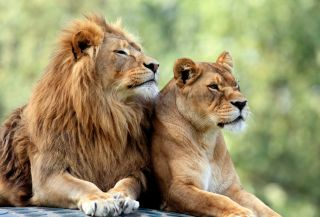
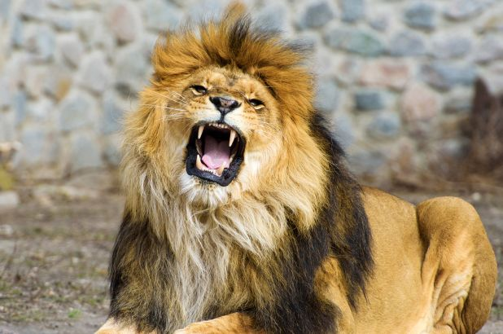

LION

The lion (Panthera leo) is a species in the family Felidae; it is a muscular,
deep-chested cat with a short, rounded head, a reduced neck and round ears,
and a hairy tuft at the end of its tail. It is sexually dimorphic; adult male
lions have a prominent mane, which is the most recognisable feature of the species.
With a typical head-to-body length of 184–208 cm (72–82 in) they are larger than
females at 160–184 cm (63–72 in). It is a social species, forming groups called
prides. A lion pride consists of a few adult males, related females and cubs.
Groups of female lions usually hunt together, preying mostly on large ungulates.
The lion is an apex and keystone predator, although some lions scavenge when
opportunities occur, and have been known to hunt humans, although the species
typically does not.
 Typically, the lion inhabits grasslands and savannas but is absent in dense
forests. It is usually more diurnal than other big cats, but when persecuted
it adapts to being active at night and at twilight. In the Pleistocene, the
lion ranged throughout Eurasia, Africa and North America but today it has been
reduced to fragmented populations in Sub-Saharan Africa and one critically
endangered population in western India. It has been listed as Vulnerable on the
IUCN Red List since 1996 because populations in African countries have declined
by about 43% since the early 1990s. Lion populations are untenable outside
designated protected areas. Although the cause of the decline is not fully
understood, habitat loss and conflicts with humans are the greatest causes for
concern.
Typically, the lion inhabits grasslands and savannas but is absent in dense
forests. It is usually more diurnal than other big cats, but when persecuted
it adapts to being active at night and at twilight. In the Pleistocene, the
lion ranged throughout Eurasia, Africa and North America but today it has been
reduced to fragmented populations in Sub-Saharan Africa and one critically
endangered population in western India. It has been listed as Vulnerable on the
IUCN Red List since 1996 because populations in African countries have declined
by about 43% since the early 1990s. Lion populations are untenable outside
designated protected areas. Although the cause of the decline is not fully
understood, habitat loss and conflicts with humans are the greatest causes for
concern.
 One of the most widely recognised animal symbols in human culture, the lion has been
extensively depicted in sculptures and paintings, on national flags, and in contemporary
films and literature. Lions have been kept in menageries since the time of the Roman
Empire and have been a key species sought for exhibition in zoological gardens across
the world since the late 18th century. Cultural depictions of lions were prominent in
the Upper Paleolithic period; carvings and paintings from the Lascaux and Chauvet Caves
in France have been dated to 17,000 years ago, and depictions have occurred in virtually
all ancient and medieval cultures that coincided with the lion's former and current
ranges.
One of the most widely recognised animal symbols in human culture, the lion has been
extensively depicted in sculptures and paintings, on national flags, and in contemporary
films and literature. Lions have been kept in menageries since the time of the Roman
Empire and have been a key species sought for exhibition in zoological gardens across
the world since the late 18th century. Cultural depictions of lions were prominent in
the Upper Paleolithic period; carvings and paintings from the Lascaux and Chauvet Caves
in France have been dated to 17,000 years ago, and depictions have occurred in virtually
all ancient and medieval cultures that coincided with the lion's former and current
ranges.
 The lion's closest relatives are the other species of the genus Panthera, namely tiger,
snow leopard, jaguar, and leopard. Results of phylogenetic studies published in 2006
and 2009 indicate that the jaguar and the lion belong to one sister group that diverged
about 2.06 million years ago.[9][10] Results of later studies indicate that the leopard
and the lion belong to the same sister group, which diverged 3.1–1.95 million years ago.
[11][12] The geographic origin of the Panthera is most likely northern Central Asia. The
leopard-lion clade was distributed in the Asian and African Palearctic since at least
the Early Pliocene. The clade consisting of lion and Eurasian cave lion is thought to
have diverged in Africa or Holarctic Asia,[35] 2.93–1.23 million years ago.[28] Hybridisation
between ancestors of lion and snow leopard lineages may have continued until about
2.1 million years ago.[36] The Eurasian and American cave lions became extinct at the
end of the last glacial period without mitochondrial descendants on other continents.
[29][37][38]
The lion's closest relatives are the other species of the genus Panthera, namely tiger,
snow leopard, jaguar, and leopard. Results of phylogenetic studies published in 2006
and 2009 indicate that the jaguar and the lion belong to one sister group that diverged
about 2.06 million years ago.[9][10] Results of later studies indicate that the leopard
and the lion belong to the same sister group, which diverged 3.1–1.95 million years ago.
[11][12] The geographic origin of the Panthera is most likely northern Central Asia. The
leopard-lion clade was distributed in the Asian and African Palearctic since at least
the Early Pliocene. The clade consisting of lion and Eurasian cave lion is thought to
have diverged in Africa or Holarctic Asia,[35] 2.93–1.23 million years ago.[28] Hybridisation
between ancestors of lion and snow leopard lineages may have continued until about
2.1 million years ago.[36] The Eurasian and American cave lions became extinct at the
end of the last glacial period without mitochondrial descendants on other continents.
[29][37][38]

Felis leo was the scientific name used by Carl Linnaeus in 1758, who described
German naturalist Lorenz Oken in 1816.[13] Between the mid-18th and mid-20th
centuries, 26 lion specimens were described and proposed as subspecies, of which
11 were recognised as valid in 2005.[1] They were distinguished on the basis of
appearance, size and colour of mane. Because these characteristics show much
variation between individuals, most of these forms were probably not true
subspecies, especially because they were often based upon museum material with
"striking, but abnormal" morphological characteristics.
 The Lion King is a 2019 American animated musical film directed and produced by
Jon Favreau, written by Jeff Nathanson, and produced by Walt Disney Pictures. It
is a photorealistic computer-animated remake of Disney's traditionally animated
1994 film of the same name. The film stars the voices of Donald Glover, Seth Rogen,
Chiwetel Ejiofor, Alfre Woodard, Billy Eichner, John Kani, John Oliver, Florence
Kasumba, Eric Andre, Keegan-Michael Key, JD McCrary, Shahadi Wright Joseph,
and Beyoncé Knowles-Carter, as well as James Earl Jones reprising his role from
the original film. The plot follows Simba, a young lion who must embrace his
role as the rightful king of his native land following the murder of his father,
Mufasa, at the hands of his uncle, Scar.
The Lion King is a 2019 American animated musical film directed and produced by
Jon Favreau, written by Jeff Nathanson, and produced by Walt Disney Pictures. It
is a photorealistic computer-animated remake of Disney's traditionally animated
1994 film of the same name. The film stars the voices of Donald Glover, Seth Rogen,
Chiwetel Ejiofor, Alfre Woodard, Billy Eichner, John Kani, John Oliver, Florence
Kasumba, Eric Andre, Keegan-Michael Key, JD McCrary, Shahadi Wright Joseph,
and Beyoncé Knowles-Carter, as well as James Earl Jones reprising his role from
the original film. The plot follows Simba, a young lion who must embrace his
role as the rightful king of his native land following the murder of his father,
Mufasa, at the hands of his uncle, Scar.